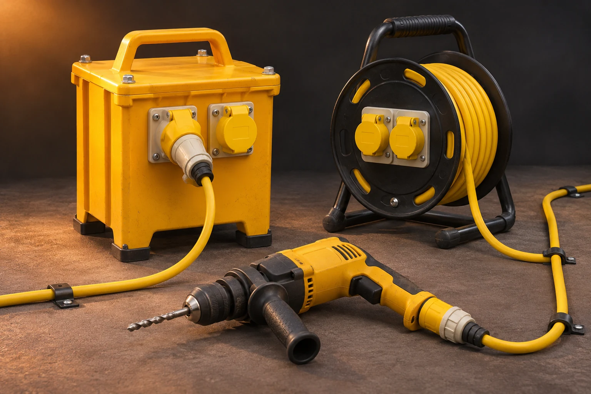
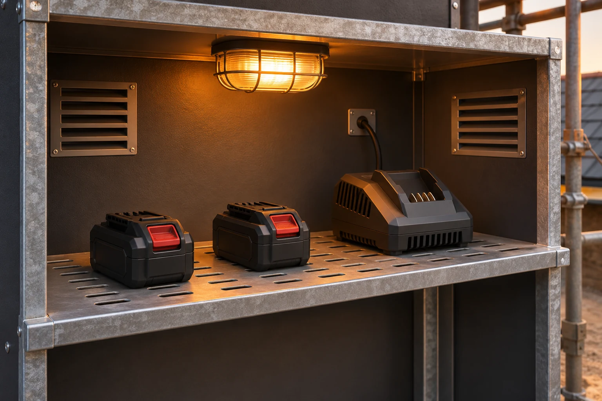
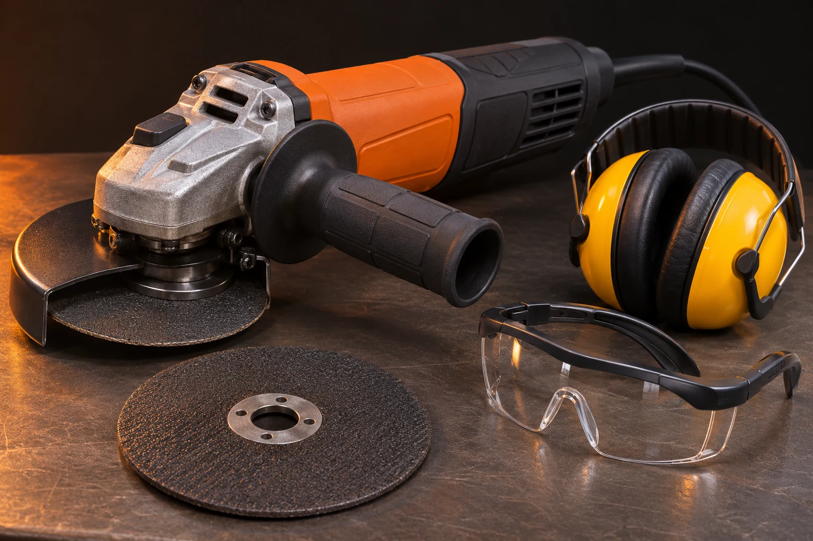
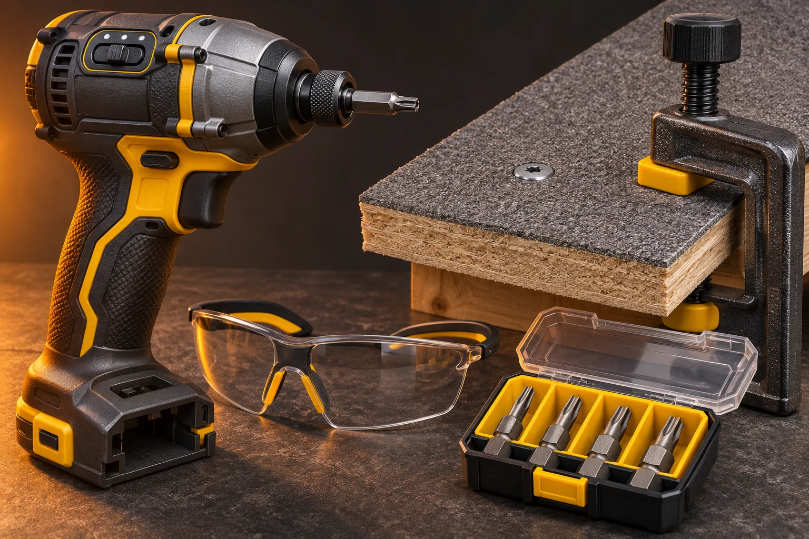

Build safe habits with tool inspections, equipment selection, battery and electrical safety, protective equipment and site-readiness checks.
Free learning resourcesPre-use inspectionTask-specific PPE
Free beginner learning · Tools and safety
Site tools: understanding safe use
This original introductory guide covers equipment checks, 110V electrical tools, cordless tools, hand tools, working at height and hot works. No payment or account required.
Important: This is awareness training, not a practical competency assessment or permission to undertake dangerous work. Follow the site risk assessment, manufacturer instructions, employer procedures and appropriate supervision. Never use a torch, work at height or operate equipment you have not been trained and authorised to use.
Equipment awareness visual. Select tools and protective equipment for the assessed task, site conditions and manufacturer instructions.Safe-use sequence
Pause · Isolate · Report
Pause
Check the task, environment, training and authorisation before selecting equipment.
Isolate
Stop and safely isolate damaged or unsuitable equipment so it cannot be used by someone else.
Report
Tell the supervisor, record the defect through site procedures and wait for competent inspection or repair.
Lesson 01
Before using any tool
Identify the task, tool and hazards; check whether a safer method or different tool is available.
Check you have been trained and authorised; confirm the equipment is suitable for the environment and material.
Inspect tool condition, guards, cables, plugs, handles, bits, blades and accessories before use.
Ensure a stable work area, appropriate lighting, safe access, edge protection and separation from others.
Use task-appropriate PPE as a last line of protection, not a replacement for guards or safe systems.
Stop and isolate defective equipment, report it, and prevent further use until properly checked.
Lesson 02
110V site electrical tools

Still learning visual. Use only equipment, connectors and cable routing approved for the site.
On UK construction sites, reduced low-voltage 110V centre-tapped-to-earth systems are commonly used to reduce electric shock risk. They do not make electricity harmless.
Use a suitable, inspected transformer and correctly rated connectors, cables and equipment.
Check cable routes to avoid water, sharp edges, heat, crushing and trip hazards.
Never improvise plugs, bypass guards, repair damaged insulation with tape or use a tool with a defective switch.
Disconnect power before adjustments or changing accessories, following the manufacturer's isolation procedure.
Keep electrical equipment away from wet conditions unless it is specifically rated and safe for that use.
Quick check: Is a 110V tool automatically safe in standing water?
No. Reduced voltage lowers some risks, but water, damaged equipment and unsuitable connectors remain hazardous. Stop and follow the site safe system of work.
Lesson 03
Battery-powered tools

Still learning visual. Follow battery maker instructions and site fire precautions.
Use compatible manufacturer-approved batteries and chargers; check housings for damage, swelling or overheating.
Charge in an appropriate supervised location away from combustible materials, following site fire precautions.
Remove or isolate the battery before changing blades, bits or attachments, according to instructions.
Secure loose materials and keep hands away from moving parts; don't rely on a trigger lock alone.
Quarantine damaged or overheating lithium-ion batteries and follow the site's emergency procedures.
Quick check: Can a damaged battery go straight back on charge?
No. Do not charge damaged, swollen, leaking or unusually hot batteries. Isolate the hazard and report it.
Tool focus · Skill saw
Skill saws and circular saws
Still learning visual: guard fitted and work supported. Follow the exact saw manual and approved cutting method.
Use the correct blade for the material and machine; inspect blade, base, guard and switch before use.
Never tie back or defeat the lower guard; stop if it sticks or is damaged.
Support and clamp the board so the offcut cannot pinch the blade or fall; keep hands clear of the cut path.
Allow the blade to reach operating speed; guide the saw steadily without forcing or reaching underneath the work.
Wait for the blade to stop and isolate the battery or supply before adjustment, clearing or blade changes.
Assess dust, noise, vibration, cable routing and bystanders; use suitable controls and PPE.
Tool focus · Disc cutter
Angle grinders and disc cutters

Still learning visual: guard and side handle fitted. Match the disc to the machine and material.
Only trained and authorised operators should use a disc cutter; consider a safer cutting method first.
Check the disc type, material, diameter, bore and maximum speed against the exact machine.
Inspect the disc for damage and confirm the guard, side handle, switch and clamping parts are sound.
Secure the work and keep others clear of dust and fragments; use task-appropriate eye, face, hearing and respiratory protection.
Do not side-load a cut-off disc. Let it stop fully before setting the tool down.
Control sparks and hot fragments under the site fire controls. Stop if conditions are unsafe or the approved method does not permit hot work.
Tool focus · Impact driver
Impact drivers and drills

Still learning visual: select the right bit and fixing, support the sample and keep the driver controlled.
Check fixing type, length, spacing and substrate against the approved roof specification before permanent installation.
Use a sound, compatible bit and suitable setting; keep the driver square and avoid over-driving or damaging the board face.
Secure the work and keep hands clear of the bit and reaction path; pause if the bit slips or the tool binds.
Isolate or remove the battery before changing bits, clearing a jam or maintenance, following the tool instructions.
Check batteries and chargers; stop using batteries that are damaged, swollen, leaking or unusually hot and follow site emergency procedures.
Lesson 04
Knives, rollers and hand tools
Select the correct cutting tool, sharp blade type and cutting surface; use guarded or retractable blades where suitable.
Cut away from yourself and others, keep the free hand clear and never leave exposed blades loose.
Store blades securely and dispose of used blades in a suitable sharps container.
Inspect rollers, handles, straightedges and hand tools for damage before use.
Maintain good posture and take care around roof edges, penetrations and uneven surfaces.
Lesson 05
Working at height and harness awareness
Plan work to avoid height where reasonably practicable; where not possible, prevent falls using suitable collective protection before relying on personal protection.
Never assume a roof is safe to walk on without competent assessment.
Harness systems require competent selection, inspection, correct anchorage, training and a prompt rescue plan; they are not a substitute for edge protection.
Ladders are not a default work platform and must be justified as appropriate to the task and risk.
Lesson 06
Hot works and torch-on felt awareness
Roofing torches can ignite combustible decks, insulation, concealed cavities and adjacent building materials. Torch work must be carried out only by appropriately trained and competent people under an approved system of work.
Assess whether a cold-applied or flame-free system can be used instead.
Follow the approved hot-work permit, fire watch and emergency arrangements where required.
Check combustible substrates, adjacent materials, hidden voids and penetrations before work begins.
Keep appropriate firefighting equipment available and know when to stop and raise the alarm.
Never use a flame near materials or conditions prohibited by the system manufacturer or site controls.
Knowledge check
Test your understanding
1. What should you do with a tool that has a damaged cable?
Stop using it, isolate it safely, label or quarantine it and report it for competent inspection or repair.
2. Is a harness alone enough to make roof-edge work safe?
No. Apply the work-at-height hierarchy, suitable collective protection and competent planning. Personal fall protection also requires appropriate anchorage and rescue arrangements.
3. What is the first question before torch-on roofing?
Can the work be completed using a safer flame-free method, and is the proposed method permitted by the risk assessment, site controls and manufacturer?
Inspect equipment, guards, power supplies and accessories; remove defective items from service.
Quality standard
Choose suitable controls
Consider dust, noise, vibration, slips, fire and manual-handling risks before work begins.
Tool safety workshop: fault recognition
Illustrative circular saw and support; not an operating demonstration.Illustrative battery and charger; follow the actual equipment manual.Illustrative tools and PPE; select equipment for assessed hazards.
Equipment inspection and isolation
Review the appropriate manufacturer manual and site arrangements before using equipment. Check visible damage, accessories, guards and work support. Remove defective tools from use, isolate them safely and report them. Never defeat guards or improvise repairs.
What should happen when a guard is damaged?
Stop using the tool and report it for competent assessment.
Battery and charging awareness
Match the battery and charger to the equipment manufacturer’s instructions. Keep charging areas suitable for the equipment and site arrangements. A swollen, leaking, hot or damaged pack must not be put back into service or charged; follow the site emergency and disposal procedure.
Can a damaged battery go straight back on charge?
No. Remove it from use and follow the site and manufacturer procedures.
Stop and review
Plan work at height using the hierarchy of controls. Avoid roof access where possible; use suitable collective protection and account for fragile surfaces, weather, access and emergency arrangements. If protection is incomplete, do not proceed.
Is a harness alone a complete safe system?
No; equipment, anchor arrangements, training, rescue and the risk assessment all matter.
Fire risk and hot works
Identify combustible and concealed elements at the survey and design stage. Use the specified safe system and applicable permit arrangements; if risks cannot be controlled, seek an approved flame-free alternative. Follow the site fire emergency arrangements.
Can combustible construction be judged by its outer finish alone?